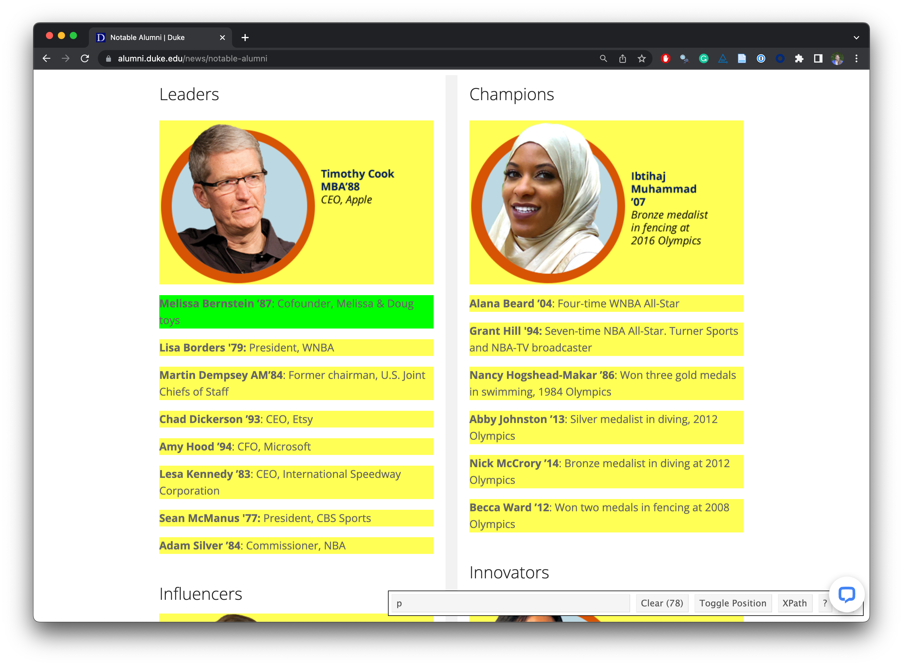

Web Scraping
April 7 + 9, 2025
Agenda 4/07/25
- web scraping
rvest
Important tool
Our approach to web scraping relies on the Chrome browser and an extension called SelectorGadget. Download them here:
Data Acquisition
Reading The Student Life
How often do you read The Student Life?
a. Every day
b. 3-5 times a week
c. Once a week
d. Rarely
Reading The Student Life
What do you think is the most common word in the titles of The Student Life opinion pieces?
Analyzing The Student Life

Reading The Student Life
How do you think the sentiments in opinion pieces in The Student Life compare across authors?
Roughly the same?
Wildly different?
Somewhere in between?
Analyzing The Student Life

All of this analysis is done in R!
(mostly) with tools you already know!
Common words in The Student Life titles
Code for the earlier plot:
data(stop_words) # from tidytext
tsl_opinion_titles |>
tidytext::unnest_tokens(word, title) |>
anti_join(stop_words) |>
count(word, sort = TRUE) |>
slice_head(n = 20) |>
mutate(word = fct_reorder(word, n)) |>
ggplot(aes(y = word, x = n, fill = log(n))) +
geom_col(show.legend = FALSE) +
theme_minimal(base_size = 16) +
labs(
x = "Number of mentions",
y = "Word",
title = "The Student Life - Opinion pieces",
subtitle = "Common words in the 500 most recent opinion pieces",
caption = "Source: Data scraped from The Student Life on April 6, 2025"
) +
theme(
plot.title.position = "plot",
plot.caption = element_text(color = "gray30")
)Avg sentiment scores of first paragraph
Code for the earlier plot:
afinn_sentiments <- get_sentiments("afinn") # need tidytext and textdata
tsl_opinion_titles |>
tidytext::unnest_tokens(word, first_p) |>
anti_join(stop_words) |>
left_join(afinn_sentiments) |>
group_by(authors, title) |>
summarize(total_sentiment = sum(value, na.rm = TRUE), .groups = "drop") |>
group_by(authors) |>
summarize(
n_articles = n(),
avg_sentiment = mean(total_sentiment, na.rm = TRUE),
) |>
filter(n_articles > 1 & !is.na(authors)) |>
arrange(desc(avg_sentiment)) |>
slice(c(1:10, 69:78)) |>
mutate(
authors = fct_reorder(authors, avg_sentiment),
neg_pos = if_else(avg_sentiment < 0, "neg", "pos"),
label_position = if_else(neg_pos == "neg", 0.25, -0.25)
) |>
ggplot(aes(y = authors, x = avg_sentiment)) +
geom_col(aes(fill = neg_pos), show.legend = FALSE) +
geom_text(
aes(x = label_position, label = authors, color = neg_pos),
hjust = c(rep(1,10), rep(0, 10)),
show.legend = FALSE,
fontface = "bold"
) +
geom_text(
aes(label = round(avg_sentiment, 1)),
hjust = c(rep(1.25,10), rep(-0.25, 10)),
color = "white",
fontface = "bold"
) +
scale_fill_manual(values = c("neg" = "#4d4009", "pos" = "#FF4B91")) +
scale_color_manual(values = c("neg" = "#4d4009", "pos" = "#FF4B91")) +
scale_x_continuous(breaks = -5:5, minor_breaks = NULL) +
scale_y_discrete(breaks = NULL) +
coord_cartesian(xlim = c(-5, 5)) +
labs(
x = "negative ← Average sentiment score (AFINN) → positive",
y = NULL,
title = "The Student Life - Opinion pieces\nAverage sentiment scores of first paragraph by author",
subtitle = "Top 10 average positive and negative scores",
caption = "Source: Data scraped from The Student Life on April 6, 2025"
) +
theme_void(base_size = 16) +
theme(
plot.title = element_text(hjust = 0.5),
plot.subtitle = element_text(hjust = 0.5, margin = unit(c(0.5, 0, 1, 0), "lines")),
axis.text.y = element_blank(),
plot.caption = element_text(color = "gray30")
)Where is the data coming from?
Where is the data coming from?
tsl_opinion_titles# A tibble: 500 × 4
title authors date first_p
<chr> <chr> <dttm> <chr>
1 Stop buying your books Sarah … 2025-04-04 08:03:00 from b…
2 The case for fleeing the count… Alex B… 2025-04-04 07:27:00 when t…
3 Tolerate thy neighbor Parker… 2025-04-04 07:22:00 it’s s…
4 Confronting furry hate Xavier… 2025-04-04 07:16:00 furrie…
5 Shame on the governor: Gavin N… Akshay… 2025-03-28 06:56:00 gavin …
6 Accessibility at the 5Cs requi… Zena A… 2025-03-28 06:42:00 althou…
7 Your spring break destination … Nicole… 2025-03-15 04:44:00 spring…
8 Pomona College’s Merritt Field… Katie … 2025-03-15 03:03:00 with l…
9 Seminars should be tech-free s… Elias … 2025-03-14 09:15:00 we hav…
10 The bitter truth to the bitter… Daniel… 2025-03-14 09:13:00 have y…
# ℹ 490 more rowsWeb scraping
Scraping the web: what? why?
Increasing amount of data is available on the web
These data are provided in an unstructured format: you can always copy & paste, but it’s time-consuming and prone to errors
Web scraping is the process of extracting information automatically and transforming it into a structured dataset
Two different scenarios:
Screen scraping: extract data from source code of website, with html parser (easy) or regular expression matching (less easy).
Web APIs (application programming interface): website offers a set of structured http requests that return JSON or XML files.
Hypertext Markup Language
Much of the data on the web is available as HTML - while it is structured (hierarchical), often it is not immediately available in a form useful for analysis (flat / tidy).
<html>
<head>
<title>This is a title</title>
</head>
<body>
<p align="center">Hello world!</p>
<br>
<div class="name" id="first">John</div>
<div class="name" id="last">Doe</div>
<div class="contact">
<div class="home">555-555-1234</div>
<div class="home">555-555-2345</div>
<div class="work">555-555-9999</div>
<div class="fax">555-555-8888</div>
</div>
</body>
</html>Some HTML elements
<html>: start of the HTML page<head>: header information (metadata about the page)<body>: everything that is on the page<p>: paragraphs<b>: bold<table>: table<div>: a container to group content together<a>: the “anchor” element that creates a hyperlink
rvest
- The rvest package makes basic processing and manipulation of HTML data straight forward
- It is designed to work with pipelines built with
|> - rvest.tidyverse.org
library(rvest)
rvest
Core functions:
read_html()- read HTML data from a url or character string.html_elements()- select specified elements from the HTML document using CSS selectors.html_element()- select a single element from the HTML document using CSS selectors.html_table()- parse an HTML table into a data frame.html_text()/html_text2()- extract element’s text content.html_name- extract a element’s name(s).html_attrs- extract all attributes.html_attr- extract attribute value(s) by name.
html & rvest
html <-
'<html>
<head>
<title>This is a title</title>
</head>
<body>
<p align="center">Hello world!</p>
<br>
<div class="name" id="first">John</div>
<div class="name" id="last">Doe</div>
<div class="contact">
<div class="home">555-555-1234</div>
<div class="home">555-555-2345</div>
<div class="work">555-555-9999</div>
<div class="fax">555-555-8888</div>
</div>
</body>
</html>'. . .
read_html(html){html_document}
<html>
[1] <head>\n<meta http-equiv="Content-Type" content="text/html; charset=UTF-8 ...
[2] <body>\n <p align="center">Hello world!</p>\n <br><div class="name" ...Selecting elements
read_html(html) |> html_elements("p"){xml_nodeset (1)}
[1] <p align="center">Hello world!</p>. . .
read_html(html) |> html_elements("p") |> html_text()[1] "Hello world!". . .
read_html(html) |> html_elements("p") |> html_name()[1] "p". . .
read_html(html) |> html_elements("p") |> html_attrs()[[1]]
align
"center" . . .
read_html(html) |> html_elements("p") |> html_attr("align")[1] "center"More selecting elements
read_html(html) |> html_elements("div"){xml_nodeset (7)}
[1] <div class="name" id="first">John</div>
[2] <div class="name" id="last">Doe</div>
[3] <div class="contact">\n <div class="home">555-555-1234</div>\n ...
[4] <div class="home">555-555-1234</div>
[5] <div class="home">555-555-2345</div>
[6] <div class="work">555-555-9999</div>
[7] <div class="fax">555-555-8888</div>. . .
read_html(html) |> html_elements("div") |> html_text()[1] "John"
[2] "Doe"
[3] "\n 555-555-1234\n 555-555-2345\n 555-555-9999\n 555-555-8888\n "
[4] "555-555-1234"
[5] "555-555-2345"
[6] "555-555-9999"
[7] "555-555-8888" CSS selectors
- We will use a tool called SelectorGadget to help us identify the HTML elements of interest by constructing a CSS selector which can be used to subset the HTML document.
. . .
- Some examples of basic selector syntax is below,
| Selector | Example | Description |
|---|---|---|
| .class | .title |
Select all elements with class=“title” |
| #id | #name |
Select all elements with id=“name” |
| element | p |
Select all <p> elements |
| element element | div p |
Select all <p> elements inside a <div> element |
| element>element | div > p |
Select all <p> elements with <div> as a direct parent |
| [attribute] | [class] |
Select all elements with a class attribute |
| [attribute=value] | [class=title] |
Select all elements with class=“title” |
Agenda 4/9/25
rvestcontinues- SelectorGadget
- ethics
CSS classes and ids
classandidare used to style elements (e.g., change their color!). They are special types of attributes.classcan be applied to multiple different elements (classis identified with., for example.name)idis unique to each element (idis identified with#, for example,#first)
read_html(html) |> html_elements(".name"){xml_nodeset (2)}
[1] <div class="name" id="first">John</div>
[2] <div class="name" id="last">Doe</div>. . .
read_html(html) |> html_elements("div.name"){xml_nodeset (2)}
[1] <div class="name" id="first">John</div>
[2] <div class="name" id="last">Doe</div>. . .
read_html(html) |> html_elements("#first"){xml_nodeset (1)}
[1] <div class="name" id="first">John</div>Text with html_text() vs. html_text2()
- The two functions handle whitespace differently:
html <- read_html("<p> Hello,\n world! </p>")
html |> html_element("p") |> html_text()[1] " Hello,\n world! "html |> html_element("p") |> html_text2()[1] "Hello, world!"Text with html_text() vs. html_text2()
html = read_html(
"<p>
This is the first sentence in the paragraph.
This is the second sentence that should be on the same line as the first sentence.<br>This third sentence should start on a new line.
</p>"
). . .
html |> html_text()[1] " \n This is the first sentence in the paragraph.\n This is the second sentence that should be on the same line as the first sentence.This third sentence should start on a new line.\n "html |> html_text2()[1] "This is the first sentence in the paragraph. This is the second sentence that should be on the same line as the first sentence.\nThis third sentence should start on a new line."HTML tables with html_table()
html_table =
'<html>
<head>
<title>This is a title</title>
</head>
<body>
<table>
<tr> <th>a</th> <th>b</th> <th>c</th> </tr>
<tr> <td>1</td> <td>2</td> <td>3</td> </tr>
<tr> <td>2</td> <td>3</td> <td>4</td> </tr>
<tr> <td>3</td> <td>4</td> <td>5</td> </tr>
</table>
</body>
</html>'. . .
read_html(html_table) |>
html_elements("table") |>
html_table()[[1]]
# A tibble: 3 × 3
a b c
<int> <int> <int>
1 1 2 3
2 2 3 4
3 3 4 5html_attr()
extracts data from attributes:
(n.b., the <a> tag refers to “anchor” and is used to create hyperlinks)
html <- minimal_html("
<p><a href='https://en.wikipedia.org/wiki/Cat'>cats</a></p>
<p><a href='https://en.wikipedia.org/wiki/Dog'>dogs</a></p>
")
html{html_document}
<html>
[1] <head>\n<meta http-equiv="Content-Type" content="text/html; charset=UTF-8 ...
[2] <body>\n<p><a href="https://en.wikipedia.org/wiki/Cat">cats</a></p>\n <p ...html |>
html_attr("href")[1] NAhtml |>
html_elements("[href]") |>
html_attr("href")[1] "https://en.wikipedia.org/wiki/Cat" "https://en.wikipedia.org/wiki/Dog"html |>
html_elements("p") {xml_nodeset (2)}
[1] <p><a href="https://en.wikipedia.org/wiki/Cat">cats</a></p>
[2] <p><a href="https://en.wikipedia.org/wiki/Dog">dogs</a></p>html |>
html_elements("p") |>
html_element("a") {xml_nodeset (2)}
[1] <a href="https://en.wikipedia.org/wiki/Cat">cats</a>
[2] <a href="https://en.wikipedia.org/wiki/Dog">dogs</a>html |>
html_elements("p") |>
html_element("a") |>
html_attr("href")[1] "https://en.wikipedia.org/wiki/Cat" "https://en.wikipedia.org/wiki/Dog"html |>
html_elements("p a") |>
html_attr("href")[1] "https://en.wikipedia.org/wiki/Cat" "https://en.wikipedia.org/wiki/Dog"html |>
html_element("a") |>
html_attr("href")[1] "https://en.wikipedia.org/wiki/Cat"html |>
html_elements("a") |>
html_attr("href")[1] "https://en.wikipedia.org/wiki/Cat" "https://en.wikipedia.org/wiki/Dog"html_attr()always returns a string, so if you’re extracting numbers or dates, you’ll need to do some post-processing.
div p vs div > p
div pselects all<p>elements within<div>, regardless of depth.div > pselects only direct child<p>elements of<div>.
<div>
<p>This will be selected by both `div p` and `div > p`.</p>
<section>
<p>This will be selected only by `div p`, not by `div > p`. Because it is inside the section tag.</p>
</section>
</div>SelectorGadget
SelectorGadget (selectorgadget.com) is a javascript based tool that helps you interactively build an appropriate CSS selector for the content you are interested in.
Recap
- Use the SelectorGadget identify elements you want to grab
- Use the rvest R package to first read in the entire page (into R) and then parse the object you’ve read in to the elements you’re interested in
- Put the components together in a data frame (a tibble) and analyze it like you analyze any other data
Plan
- Read in the entire page
- Scrape opinion title and save as
title - Scrape author and save as
author - Scrape date and save as
date - Create a new data frame called
tsl_opinionwith variablestitle,author, anddate
Read in the entire page
tsl_page <- read_html("https://tsl.news/category/opinions/")
tsl_page{html_document}
<html lang="en-US">
[1] <head>\n<meta http-equiv="Content-Type" content="text/html; charset=UTF-8 ...
[2] <body class="archive category category-opinions category-2244 custom-back .... . .
typeof(tsl_page)[1] "list"class(tsl_page)[1] "xml_document" "xml_node" - we need to convert into something more familiar, like a data frame
Scrape title and save as title
tsl_page |>
html_elements(".entry-title a") {xml_nodeset (10)}
[1] <a href="https://tsl.news/opinion-the-real-cost-of-administrative-bloat/ ...
[2] <a href="https://tsl.news/opinion-finding-hope-in-the-courts/" title="OP ...
[3] <a href="https://tsl.news/opinion-your-vote-for-aspc-president-didnt-mat ...
[4] <a href="https://tsl.news/opinion-stop-buying-your-books/" title="OPINIO ...
[5] <a href="https://tsl.news/opinion-the-case-for-fleeing-the-country/" tit ...
[6] <a href="https://tsl.news/opinion-tolerate-thy-neighbor/" title="OPINION ...
[7] <a href="https://tsl.news/opinion-confronting-furry-hate/" title="OPINIO ...
[8] <a href="https://tsl.news/shame-on-the-governor-gavin-newsom-is-his-own- ...
[9] <a href="https://tsl.news/opinions-accessibility-at-the-5cs-requires-mor ...
[10] <a href="https://tsl.news/opinion-your-spring-break-destination-isnt-rea .... . .
title <- tsl_page |>
html_elements(".entry-title a") |>
html_text()
title [1] "Opinion: The real cost of administrative bloat"
[2] "OPINION: Finding hope in the courts"
[3] "OPINION: Your vote for ASPC president didn’t matter. Here’s why"
[4] "OPINION: Stop buying your books"
[5] "OPINION: The case for fleeing the country"
[6] "OPINION: Tolerate thy neighbor"
[7] "OPINION: Confronting furry hate"
[8] "Shame on the governor: Gavin Newsom is his own worst enemy"
[9] "OPINION: Accessibility at the 5Cs requires more than just good intentions"
[10] "OPINION: Your spring break destination isn’t really yours" title <- title |>
str_remove("OPINION: ")
title [1] "Opinion: The real cost of administrative bloat"
[2] "Finding hope in the courts"
[3] "Your vote for ASPC president didn’t matter. Here’s why"
[4] "Stop buying your books"
[5] "The case for fleeing the country"
[6] "Tolerate thy neighbor"
[7] "Confronting furry hate"
[8] "Shame on the governor: Gavin Newsom is his own worst enemy"
[9] "Accessibility at the 5Cs requires more than just good intentions"
[10] "Your spring break destination isn’t really yours" Scrape date and save as date
date <- tsl_page |>
html_elements(".published") |>
html_text()
date [1] "April 10, 2025 10:41 pm" "April 10, 2025 9:11 pm"
[3] "April 10, 2025 7:39 pm" "April 4, 2025 1:03 am"
[5] "April 4, 2025 12:27 am" "April 4, 2025 12:22 am"
[7] "April 4, 2025 12:16 am" "March 27, 2025 11:56 pm"
[9] "March 27, 2025 11:42 pm" "March 14, 2025 9:44 pm" date <- date |>
lubridate::mdy_hm(tz = "America/Los_Angeles")
date [1] "2025-04-10 22:41:00 PDT" "2025-04-10 21:11:00 PDT"
[3] "2025-04-10 19:39:00 PDT" "2025-04-04 01:03:00 PDT"
[5] "2025-04-04 00:27:00 PDT" "2025-04-04 00:22:00 PDT"
[7] "2025-04-04 00:16:00 PDT" "2025-03-27 23:56:00 PDT"
[9] "2025-03-27 23:42:00 PDT" "2025-03-14 21:44:00 PDT"Create a new data frame
tsl_opinion <- tibble(
title,
author,
date
)
tsl_opinion# A tibble: 10 × 3
title author date
<chr> <chr> <dttm>
1 Opinion: The real cost of administrativ… Eric … 2025-04-10 22:41:00
2 Finding hope in the courts Danie… 2025-04-10 21:11:00
3 Your vote for ASPC president didn’t mat… Luke … 2025-04-10 19:39:00
4 Stop buying your books Sarah… 2025-04-04 01:03:00
5 The case for fleeing the country Alex … 2025-04-04 00:27:00
6 Tolerate thy neighbor Parke… 2025-04-04 00:22:00
7 Confronting furry hate Xavie… 2025-04-04 00:16:00
8 Shame on the governor: Gavin Newsom is … Aksha… 2025-03-27 23:56:00
9 Accessibility at the 5Cs requires more … Zena … 2025-03-27 23:42:00
10 Your spring break destination isn’t rea… Nicol… 2025-03-14 21:44:00Opinion titles
tsl_opinions <- function(i){
tsl_page <- rvest::read_html(paste0("https://tsl.news/category/opinions/page/",i))
title <- tsl_page |>
html_elements(".entry-title a") |>
html_text() |>
str_remove("OPINION: ")
author <- tsl_page |>
html_elements("span.author") |>
html_text() |>
tibble() |>
set_names(nm = "authors") |>
mutate(authors = str_replace(authors, "By ", ""))
date <- tsl_page |>
html_elements(".published") |>
html_text() |>
lubridate::mdy_hm(tz = "America/Los_Angeles")
first_p <- tsl_page |>
html_elements(".entry-content p:nth-child(1)") |>
html_text() |>
tolower()
tibble(
title,
author,
date,
first_p
)
}
tsl_opinion_titles <- c(1:50) |> purrr::map(tsl_opinions) |>
list_rbind()Web scraping considerations
Check if you are allowed!
library(robotstxt)
paths_allowed("https://tsl.news/category/opinions/")[1] TRUEpaths_allowed("http://www.facebook.com")[1] FALSEEthics: “Can you?” vs “Should you?”

Source: Brian Resnick, Researchers just released profile data on 70,000 OkCupid users without permission, Vox.
“Can you?” vs “Should you?”

Challenges: Unreliable formatting
